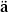
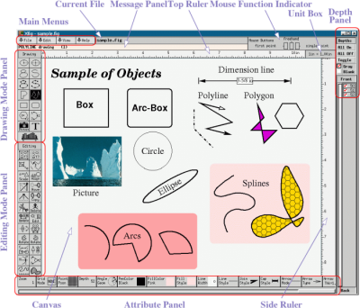
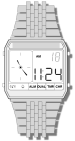
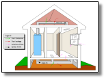
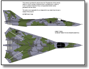
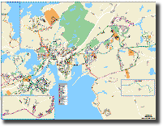

[ English Version | Japanese Version ]
このリリースで変更された点については、 新しい機能 や 修正された問題点 を参照して下さい。
xfig では、
円、
矩形、
折れ線、
スプライン曲線、
テキストなどの
オブジェクトを組み合わせることによって図を作成します。
また、GIF、JPEG、EPSF (PostScript) などで表現された
イメージを張り付ける
ことも可能です。
オブジェクトは、新たに
入力したり、
削除したり、
移動したり、
変形したりすることが可能です。
オブジェクトの色や線の形状などは、
多数の選択肢の中から選択することができます。
テキストには、種々のフォント
を使用することができます。
また、テキストに ``'' や
`` '' などの
Latin-1 キャラクタ
を含めることもできます。
'' などの
Latin-1 キャラクタ
を含めることもできます。
次に xfig の画面イメージを示します。 イメージをクリックすると大きなものが表示されます。(96k)

また、次に xfig の配布から抜き出したいくつかの例を示します。 イメージをクリックすると大きなものが表示されます。
   
xfig は、図をその独自のフォーマットである Fig format でセーブしますが、 PostScript、GIF、JPEG、HP-GL などの 種々のフォーマットに変換する ことも可能です。 また、xfig は 図を PostScript プリンタへ出力する ための機能も持っています。
図を xfig が読み込むことのできるファイル・フォーマットである Fig format で出力することのできる いくつかのアプリケーション が存在します。 例えば、xfig はグラフを作成するための機能を持っていませんが、 gnuplot や xgraph などのツールは グラフを作成して Fig format で出力することができます。 使用したいアプリケーションが xfig で読み込めるような出力を生成できない場合でも、 pstoedit や hp2xx などのツールを用いれば、 それらの図を xfig で読み込み、編集することができるかも知れません。 単にイメージを図の中に貼り付けたいが、図そのものを編集する必要がない (この例 のように) のであれば、GIF、JPEG、EPSF (PostScript) などの イメージを貼り付けることも可能です。
操作は主にマウスによって行ないますが、 一部の操作は キーボード・アクセラレータ (ショートカット) を用いて行なうことも可能です。 3ボタン・マウスの使用を推奨しますが、2ボタン・マウスも使用可能 (2ボタン・マウスを使用しており、 X サーバーが3ボタン・マウスのエミュレーションを行なわない場合には、 マウスボタン2の代わりに Meta キーか Altキーとマウスボタン3を同時に押す) です。 通常、マウスボタン1〜3は、 それぞれ左ボタン、中ボタン、及び右ボタンに割り当てられています。
xfig 3.2、及び fig2dev 3.2 には国際化のためのコードが含まれており、 テキストに日本語などの文字を含めることが可能となっています。 これは X11R5 の標準の国際化 (I18N) メカニズムを用いており、 現時点では日本語、及び韓国語での動作が確認されています。 また、公式リリースの一部ではないものの、 ギリシャ、ヘブライ、シリルなどの文字も使用できるかも知れません。 これについては、 国際化 を参照して下さい。
xfig [ options... ] [ filename ]
options... は コマンド行オプション であり、 これを用いてある程度のカスタマイズを行なうことができます。 また、xfig コマンドを実行する度にオプションを指定する代わりに、 リソース を用いて 設定を行なうことも可能です。
filename を指定すると xfig は そのファイルをロードした状態で起動します。